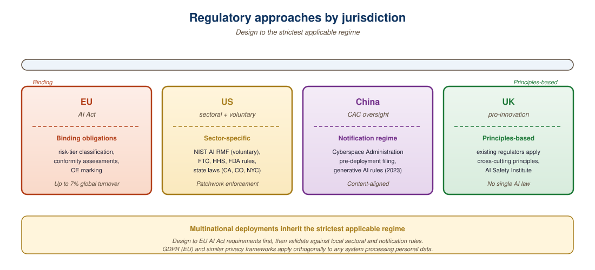

The regulations you ignore today become the compliance emergencies of tomorrow. Plan accordingly.
A Meticulous Guard, Compliance-Haunted AI Agent
The regulatory landscape for AI is evolving rapidly across jurisdictions. The EU AI Act establishes the world's first comprehensive AI regulation with risk-based tiers. GDPR already applies to LLM systems that process personal data. US executive orders set voluntary frameworks, while sector-specific regulations (HIPAA, financial services, education) add domain-specific requirements. Engineers must design systems that can adapt to this shifting landscape. The governance and documentation practices covered here connect directly to the evaluation frameworks from Chapter 42.
Prerequisites
Before starting, make sure you are familiar with bias and fairness from Section 47.1, the prompt injection defenses from Section 12.3, and the audit tooling that support compliance monitoring.

53.1.1 EU AI Act Risk Tiers
Jailbreaks succeed for one structural reason: alignment training is a thin layer of behavior on top of capabilities learned from a much larger and more diverse pretraining corpus. The pretraining distribution contains uncensored examples of every harmful behavior, and alignment essentially adds a refusal classifier near the output. Any prompt that takes the model out-of-distribution relative to the alignment training data (role-play, low-resource languages, base64, ASCII art) bypasses that thin layer and exposes the underlying capability. This is the "superficial alignment hypothesis" (Lin et al., 2024) and explains why patching individual jailbreaks does not generalize: the underlying capability never goes away, only the classifier's coverage expands.
If your LLM-powered hiring tool screens candidates in the EU, you are operating a "high-risk" AI system under the EU AI Act, which means mandatory conformity assessments, detailed documentation, and ongoing monitoring. If you use it for customer service chat, you face lighter requirements. The Act classifies AI systems into four risk tiers with escalating compliance obligations. Figure 53.1.1 summarizes this structure.
The EU AI Act's final text runs to over 400 pages. In a fitting twist, several law firms used LLMs to summarize it, only to discover the summaries contained hallucinated article numbers. Regulating AI with AI remains a work in progress.
Mental Model: The Zoning Code. AI regulation works like municipal zoning laws for buildings. A single-family home (minimal-risk AI) needs almost no permits. A restaurant (limited-risk chatbot) needs health inspections and a visible license. A hospital (high-risk AI in healthcare or hiring) requires architectural review, fire safety certification, ongoing inspections, and detailed record-keeping. And some structures are simply prohibited in residential zones (social scoring, subliminal manipulation). The key insight: your compliance burden depends on where your system is "zoned," not on the technology itself.
53.1.1.1 EU AI Act Enforcement Timeline
The EU AI Act entered into force on 1 August 2024, with a phased enforcement schedule designed to give organizations time to achieve compliance. As of March 2027, all phases are in effect and fully enforceable. Understanding this timeline is critical for any team deploying AI systems in or serving the EU market.
| Phase | Effective Date | Status (Mar 2027) | Key Requirements |
|---|---|---|---|
| Phase 1: Prohibited Practices | 2 February 2025 | In effect | Ban on social scoring, subliminal manipulation, exploitation of vulnerabilities, real-time remote biometric identification (with narrow exceptions for law enforcement) |
| Phase 2: GPAI Transparency | 2 August 2025 | In effect | General-purpose AI model providers must publish technical documentation, comply with EU copyright law, and provide training data summaries. Systemic risk models (over 1025 FLOPs) face additional obligations including adversarial testing and incident reporting |
| Phase 3: High-Risk Systems | 2 August 2026 | In effect | Full conformity assessment, risk management systems, data governance, human oversight mechanisms, technical documentation, logging, transparency notices, accuracy and robustness requirements |
| Phase 4: Extended High-Risk | 2 August 2027 | Upcoming | High-risk obligations extend to AI systems that are safety components of products already covered by EU harmonization legislation (e.g., medical devices, machinery) |
53.1.1.2 The EU AI Office
The European Commission established the EU AI Office in February 2024 as the central body responsible for overseeing AI governance across the Union. The AI Office sits within the Commission's Directorate-General for Communications Networks, Content and Technology (DG CONNECT) and serves several critical functions.
- GPAI Model Oversight: The AI Office has exclusive competence for supervising general-purpose AI models, including reviewing technical documentation, conducting evaluations of systemic risk models, and enforcing compliance with transparency obligations.
- Codes of Practice: The office coordinates the development of voluntary codes of practice that provide detailed guidance on how GPAI providers can demonstrate compliance. These codes serve as a practical bridge between the Act's high-level requirements and day-to-day engineering decisions.
- International Coordination: The AI Office represents the EU in international AI governance forums, working to align regulatory approaches across jurisdictions and prevent regulatory fragmentation.
- Scientific Advisory: A scientific panel of independent experts advises the AI Office on technical matters, including the classification of systemic risk models and the evaluation of safety measures.
- Enforcement Powers: For GPAI models, the AI Office can request documentation, conduct evaluations, and impose fines of up to 3% of global annual turnover (or 15 million euros, whichever is higher) for non-compliance.
53.1.1.3 The EU AI Pact
Recognizing that the phased enforcement timeline created uncertainty about expectations during the transition period, the European Commission launched the EU AI Pact in November 2023 as a voluntary early compliance initiative. Organizations that sign the Pact commit to three core pledges: adopting an AI governance strategy, mapping and classifying their AI systems according to the Act's risk tiers, and promoting AI literacy among their staff.
The Pact serves a practical purpose beyond public relations. Signatory organizations receive early guidance from the AI Office, participate in working groups that shape the codes of practice, and build compliance infrastructure before the legal deadlines arrive. For engineering teams, the Pact's classification exercise is particularly valuable because it forces a systematic inventory of all AI systems and their risk profiles. Over 700 organizations had signed the Pact by early 2025, including major technology companies, financial institutions, and healthcare providers.
All three initial enforcement phases are now active. As of March 2027, prohibited practices (Phase 1), GPAI transparency obligations (Phase 2), and high-risk system requirements (Phase 3) are all fully enforceable. Organizations that delayed compliance planning are now exposed to significant legal risk. The maximum penalty for deploying a prohibited AI practice is 35 million euros or 7% of global annual turnover, whichever is higher. For high-risk system violations, fines can reach 15 million euros or 3% of turnover.
Write a one-page "model card" for any LLM application you are building or using. Include: intended use cases, known limitations, evaluation results, and ethical considerations. The exercise of writing it down forces clarity about what your system can and cannot do, and it serves as documentation for everyone on your team.
The EU AI Act's risk classification system was partly inspired by pharmaceutical regulation, where drugs are classified into schedules based on risk. The parallel is apt: just as you need more paperwork to prescribe morphine than ibuprofen, deploying an AI system that scores job applicants requires more documentation than deploying a spam filter.
For practitioners, the key takeaway is that regulatory compliance is a design constraint, not an afterthought. The technical documentation, logging, and human oversight requirements of high-risk AI systems map directly onto the observability infrastructure from Section 42.6 and the evaluation frameworks from Chapter 42. Teams that build observability and evaluation into their systems from day one will find compliance far easier than those who retrofit it after deployment.
Map your LLM system's data flows before your first compliance review. Draw a diagram showing where user inputs enter, where they are logged, where they are sent to third-party APIs, and where outputs are stored. Most compliance violations stem from data flowing to places the team did not realize: conversation logs stored in an unencrypted analytics database, user prompts forwarded to a model provider in a different jurisdiction, or PII cached in a vector store without a retention policy.
53.1.2 GDPR Requirements for LLM Systems
| GDPR Article | Requirement | LLM Implication |
|---|---|---|
| Art. 6 | Lawful basis for processing | Need legal basis for training on personal data |
| Art. 13-14 | Transparency | Disclose AI use; explain automated decisions |
| Art. 17 | Right to erasure | Must be able to remove individual's data from model |
| Art. 22 | Automated decision-making | Human review for decisions with legal/significant effects |
| Art. 25 | Data protection by design | Privacy-preserving training, PII filtering |
| Art. 35 | DPIA required | Impact assessment before deploying LLM systems |
A compliance checker can codify the requirements from multiple regulatory frameworks into a single tracking system. Code Fragment 53.1.1 below implements a checklist that maps each requirement to a regulatory source and tracks completion status.
"""Map regulatory requirements to checks that examine a deployment.
Each requirement carries the Article it cites (so an auditor can verify
the source), a check function that returns (passed, evidence), and a
remediation hint shown when the check fails.
"""
from dataclasses import dataclass
from datetime import datetime
from typing import Callable
import json
@dataclass
class Requirement:
article: str # e.g. "EU AI Act Art.13"
name: str
check: Callable[[dict], tuple[bool, str]]
remediation: str
def has_transparency_notice(cfg: dict) -> tuple[bool, str]:
"""EU AI Act Art.13: users must be informed they are interacting with AI."""
notice = cfg.get("ui", {}).get("ai_disclosure")
if not notice:
return False, "No AI disclosure on the user-facing UI"
if "ai" not in notice.lower():
return False, f"Disclosure too vague: {notice!r}"
return True, f"Disclosure present: {notice!r}"
def has_dpia(cfg: dict) -> tuple[bool, str]:
"""GDPR Art.35: a Data Protection Impact Assessment is required."""
dpia = cfg.get("dpia", {})
if not dpia.get("completed"):
return False, "No DPIA on file"
age = (datetime.utcnow() - datetime.fromisoformat(dpia["last_review"])).days
if age > 365:
return False, f"DPIA older than 12 months ({age} days)"
return True, f"DPIA reviewed {age} days ago"
def has_human_oversight(cfg: dict) -> tuple[bool, str]:
"""EU AI Act Art.14: high-risk systems need a human-in-the-loop path."""
esc = cfg.get("escalation_to_human", {})
if not esc.get("enabled"):
return False, "Human escalation path not configured"
sla = esc.get("sla_minutes", 9999)
if sla > 30:
return False, f"Human SLA {sla}min exceeds 30min threshold"
return True, f"Human escalation within {sla}min"
def has_retention_policy(cfg: dict) -> tuple[bool, str]:
"""GDPR Art.5(1)(e): personal data kept no longer than necessary."""
days = cfg.get("logs", {}).get("retention_days")
if days is None:
return False, "Log retention period not set"
if days > 90:
return False, f"Retention {days}d exceeds 90d default"
return True, f"Logs retained {days} days"
def has_audit_logging(cfg: dict) -> tuple[bool, str]:
"""EU AI Act Art.12: high-risk systems must log operational events."""
fields = set(cfg.get("logs", {}).get("fields_captured", []))
required = {"prompt", "response", "user_id", "timestamp", "model_version"}
missing = required - fields
if missing:
return False, f"Audit log missing fields: {sorted(missing)}"
return True, "All required fields captured"
REQUIREMENTS = [
Requirement("EU AI Act Art.13", "transparency_notice",
has_transparency_notice,
"Add an 'Powered by AI' disclosure to the chat UI"),
Requirement("GDPR Art.35", "dpia_completed", has_dpia,
"Complete a DPIA and refresh annually"),
Requirement("EU AI Act Art.14", "human_oversight", has_human_oversight,
"Configure escalation_to_human with SLA <= 30 minutes"),
Requirement("GDPR Art.5(1)(e)", "data_retention", has_retention_policy,
"Set logs.retention_days <= 90"),
Requirement("EU AI Act Art.12", "audit_logging", has_audit_logging,
"Capture prompt, response, user_id, timestamp, model_version"),
]
def audit(cfg: dict) -> dict:
findings = []
for req in REQUIREMENTS:
passed, evidence = req.check(cfg)
findings.append({
"article": req.article,
"requirement": req.name,
"passed": passed,
"evidence": evidence,
"remediation": None if passed else req.remediation,
})
return {
"score": f"{sum(f['passed'] for f in findings)}/{len(findings)}",
"compliant": all(f["passed"] for f in findings),
"findings": findings,
"assessed_at": datetime.utcnow().isoformat() + "Z",
}
# Demo: audit a sample deployment config
deployment = {
"ui": {"ai_disclosure": "This chat is powered by AI"},
"dpia": {"completed": True, "last_review": "2026-01-15T00:00:00"},
"escalation_to_human": {"enabled": True, "sla_minutes": 15},
"logs": {
"retention_days": 365, # too long: fails
"fields_captured": ["prompt", "response", "timestamp"],
},
}
print(json.dumps(audit(deployment), indent=2))53.1.3 Sector-Specific Regulations
This snippet implements compliance checks for sector-specific AI regulations such as healthcare and finance.
# implement get_sector_requirements
def get_sector_requirements(sector: str) -> dict:
"""Return regulatory requirements by sector for LLM deployments."""
requirements = {
"healthcare": {
"regulations": ["HIPAA", "FDA guidance on AI/ML", "21 CFR Part 11"],
"requirements": [
"PHI de-identification before LLM processing",
"BAA with cloud/API providers",
"Clinical validation for diagnostic support",
"Audit trail for all AI-assisted decisions",
],
},
"finance": {
"regulations": ["SR 11-7", "ECOA", "FCRA", "SEC guidance"],
"requirements": [
"Model risk management documentation",
"Fair lending compliance testing",
"Explainability for credit decisions",
"Independent model validation",
],
},
"education": {
"regulations": ["FERPA", "COPPA", "state AI laws"],
"requirements": [
"Student data privacy protection",
"Parental consent for minors (COPPA)",
"Transparency about AI use in grading",
"Opt-out mechanisms for students",
],
},
}
return requirements.get(sector, {"error": "Sector not found"})
import json
print(json.dumps(get_sector_requirements("healthcare"), indent=2))Sector-specific requirements create a layered compliance landscape.
